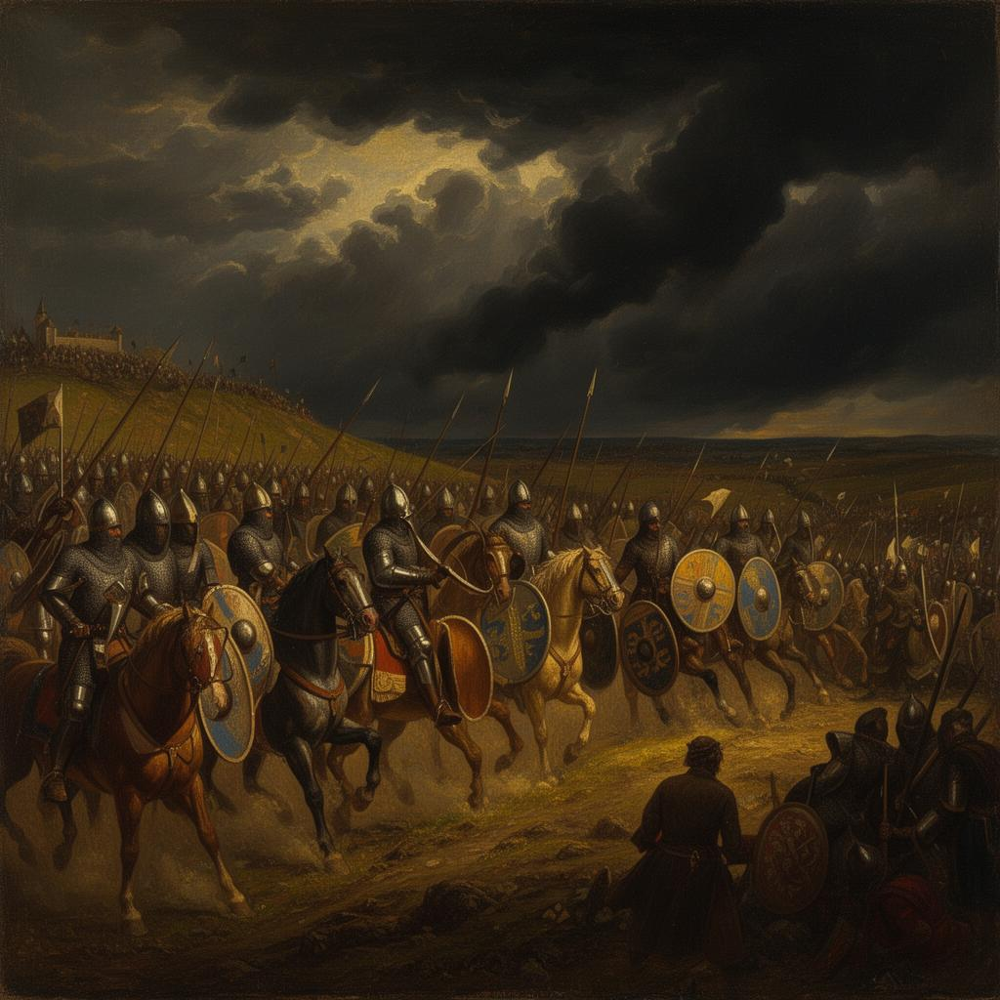

A Thousand Years of History
History of the United Kingdom
From the Norman Conquest to the modern age — explore the events, people, and forces that shaped a nation.
Browse by Era
Explore the Archive

1066 — 1485
Medieval Britain
The Norman Conquest reshapes England. Feudalism, the Black Death, and the Plantagenet kings define an era of transformation.
1485 — 1714
Tudor & Stuart
The Reformation, the English Civil War, and the Glorious Revolution — an age of religious upheaval and political transformation.

1714 — 1901
Georgian & Victorian
The Industrial Revolution transforms a nation. Parliamentary reform, scientific discovery, and the height of the British Empire.
1901 — Present
Modern Britain
Two world wars, the welfare state, and a changing world. From imperial power to modern democracy in a global age.
From the Archive
Latest Articles
Recent contributions from historians and researchers.
"The farther backward you can look, the farther forward you are likely to see."— Winston Churchill
1066
Norman Conquest
1215
Magna Carta
1707
Acts of Union
1945
End of WWII